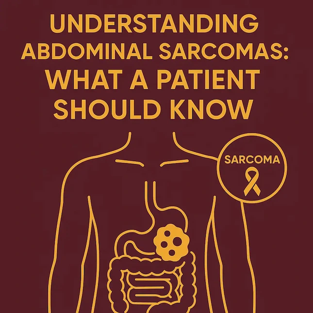

Abdominal sarcomas are rare cancers that originate from the connective tissues within the abdomen, such as fat, muscle, nerves, fibrous tissue, or blood vessels.
What Are Abdominal Sarcomas?

Abdominal sarcomas are rare cancers that originate from the connective tissues within the abdomen, such as fat, muscle, nerves, fibrous tissue, or blood vessels. Unlike the more common cancers that start in organs like the colon or pancreas, sarcomas develop in the soft tissues or mesenchymal tissue, which forms structural and supportive parts of the body.
These tumours are classified into two major groups:
- Retroperitoneal Sarcomas: These develop in the space behind the abdominal organs, known as the retroperitoneum.
- Intra-abdominal Sarcomas: Arise within abdominal organs or the abdominal wall.
Though sarcomas are rare (making up <1% of all adult cancers), they can behave aggressively and require specialised care.
What are the causes of Abdominal Sarcomas?
- Genetic Conditions
Some people inherit conditions that make them more likely to develop sarcomas. These include genetic syndromes like Li-Fraumeni syndrome and Neurofibromatosis type 1. - Radiation Exposure
People who have received radiation therapy in the past, especially to the abdominal area, may have a higher risk of developing soft tissue sarcomas years later. - Chemical Exposure
Long-term exposure to certain chemicals such as vinyl chloride, dioxins, or herbicides may increase the risk in some individuals. - Chronic Swelling or Injury
Although rare, long-standing swelling or injury in a certain part of the body may, over time, contribute to the development of sarcomas. - Unknown Causes
In many cases, there is no clear cause. Sarcomas can occur without any family history, exposure, or warning signs.
Abdominal sarcomas are not caused by lifestyle factors like diet or stress. They are uncommon and can affect anyone.
What are the common types of soft tissue sarcomas?
- Liposarcoma
This type originates in fat cells and is one of the most common types of abdominal sarcomas. It usually grows slowly but can become large before causing symptoms. - Leiomyosarcoma
This type of cancer begins in smooth muscle tissue, often originating from the walls of the intestines or blood vessels in the abdomen. It may grow more aggressively than some other types. - Gastrointestinal Stromal Tumour (GIST)
GISTs arise from special cells in the wall of the digestive tract. They are a unique type of sarcoma and are often treated differently, sometimes with targeted medicines. - Undifferentiated Pleomorphic Sarcoma (UPS)
Previously called malignant fibrous histiocytoma, this is a high-grade tumour that doesn’t resemble any specific tissue type. It can occur in the retroperitoneum (deep part of the abdomen). - Desmoid Tumours (Aggressive Fibromatosis)
Although not considered a true sarcoma or cancer, desmoid tumours arise from connective tissue and can grow aggressively. They do not spread to other organs, but they can invade nearby tissues and sometimes recur after treatment. Management often includes surgery, medications, or close monitoring depending on the case. - Other Rare Types
These include synovial sarcoma, angiosarcoma, and fibrosarcoma, each with its own behaviour and treatment approach.
What are the common symptoms?
Early abdominal sarcomas are often asymptomatic due to their deep location and slow growth. However, symptoms may appear as the tumor enlarges:
- Palpable lump or mass in the abdomen
- Dull or persistent abdominal pain
- Fullness, bloating, or early satiety
- Unexplained weight loss
- Nausea, vomiting, or bowel disturbances
- In GISTs: possible GI bleeding (black stools or vomiting blood)
Any persistent, unexplained abdominal symptoms should prompt medical evaluation.
In the event of these symptoms, the patient should consult a GI expert promptly.
Continue Your Journey to Understanding Abdominal Sarcomas
This comprehensive guide is part of our 3-part series on abdominal sarcomas. I, Advitya, believe that knowledge empowers patients and families to make informed decisions about their healthcare journey. So, stay tuned for part 2 – Abdominal Sarcomas: What You Need to Know About Diagnosis and Treatment?
Have a question this article does not answer?
Send us your reports. A specialist reviews them before you travel, so the first visit begins with a plan rather than a repeat test.